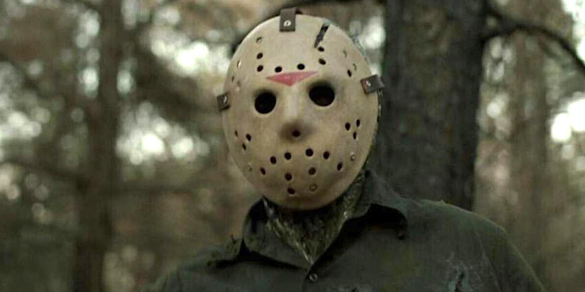
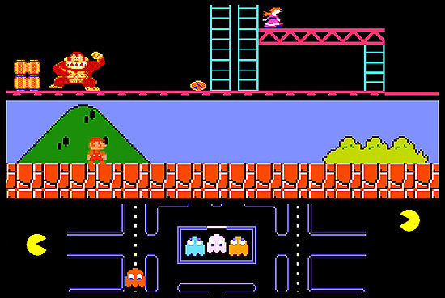
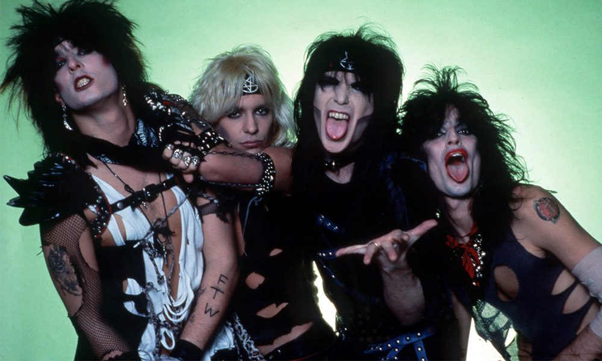

1980s Popular Culture and Trends
Film

The 1980s brought on a wave of popularity in horror and slasher films and spawned many long-running franchises such as Halloween, A Nightmare on Elm Street, and Child's Play to name a few. You may even recognize the hockey mask-wearing killer above as Jason Voorhees from the Friday the 13th franchise.
Video Games

The 1980s was the decade that really catapulted video games into a mainstream audience and allowed the video game industry to really find its footing. Most households didn't have a home console until later in the 80s so a popular activity was to head to your local arcade and spend some quarters with your friends for a few hours. Not only did the 80s spawn classics like Pacman, Donkey Kong, and Tetris, but also launched industry changers such as The Legend of Zelda and Super Mario Bros..
Music

The 1980s also changed the music industry pretty drastically. Gone was the soul music of the 70s and in was the hair metal of the 80s. Bands like Motley Crue, Def Leopard, Van Halen, and many many more were wildly popular. Everybody wanted to be a rockstar in the 80s and the fashion of the time definitely resembled that. Big hair, neon colors, metal, and leather were everywhere.